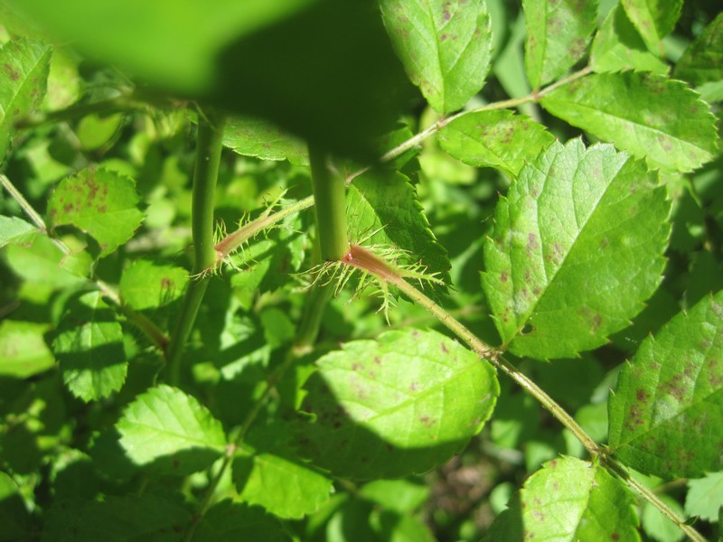
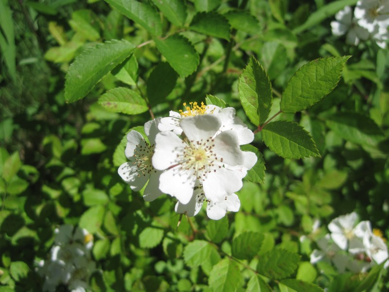
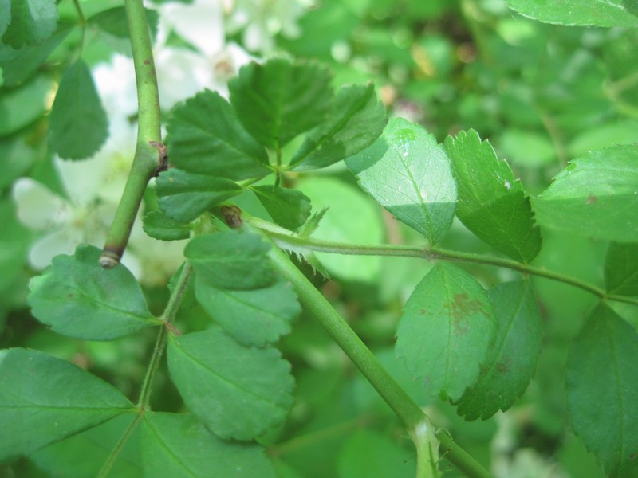
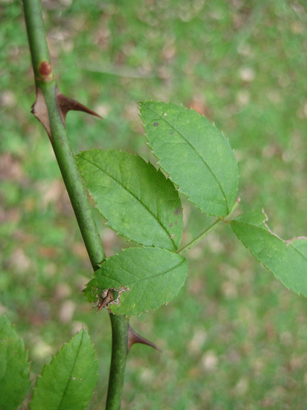
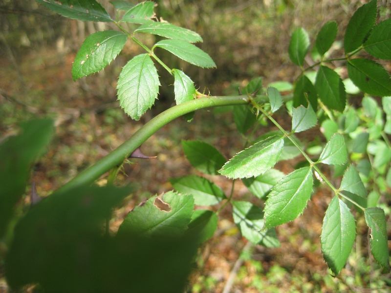

photo: Cleveland Metroparks
Multiflora Rose (Rosa multiflora)
Cleveland Metroparks |
Cleveland Metroparks |
Cleveland Metroparks |
Cleveland Metroparks |
Cleveland Metroparks |
{kind=link}
{kind=link}
{kind=link}
{kind=link}
{kind=link}
Form:
Thorny, thicket-forming shrub with wide, arching or climbing canes and stiff, curved thorns. Can reach 10-15' tall and 9-13' wide.
Leaves:
Alternate, pinnately compound with 5-11 small (0.5-1") sharply-toothed oval leaflets, nearly smooth on upper surface and paler with short hairs on underside. Pair of fringed stipules at the base of each leaf.
Flowers:
Abundant, showy, fragrant, and white to slightly pink, with styles about as long as stamens. Flowers are 0.5-1.5" across and form a loose, branching inflorescence. Blooms mid- to late spring.
Fruits & Seeds:
Small (0.25" in diameter), hard, bright red fruits, or rose hips, develop in summer, become brownish-red at maturity, and remain on plant through winter. Produces up to 500,000 seeds per year. Dispersed by birds and mammals.
Roots:
Older plants may have a root crown diameter of 8" or more. Canes may produce roots when in contact with the soil.
Tier 4 - Widespread and Abundant
These are known problem species throughout Cleveland Metroparks and are currently under active management. Management plans are set using population extent and site-specific information.
Action: These plants should be recored as present or absent. These species are known to be widespread and abundant throughout Cleveland Metroparks.